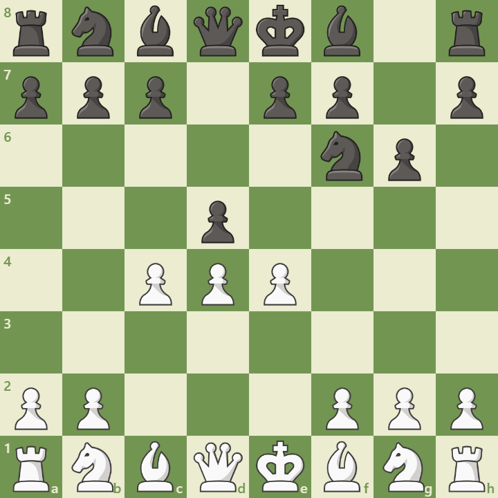

Overview
The King’s Indian Defense is a dynamic response to 1.d4, beginning with:
1. d4 Nf6 2. c4 g6 3. Nc3 Bg7 4. e4 d6
Black allows White to build a center, then strikes back with ...e5 or ...c5. It’s favored by aggressive players seeking counterplay.
Opening Diagram
This position arises after 4...d6, preparing ...O-O and ...e5.
Main Variations
- Classical: Nf3, Be2, O-O – solid setup
- Bayonet Attack: 9.b4 – queenside expansion
- Fianchetto Variation: g3, Bg2 – positional control
Strategic Themes
- Kingside attacks with ...f5 and ...g5
- Central tension and pawn breaks
- Dynamic piece play and sacrifices